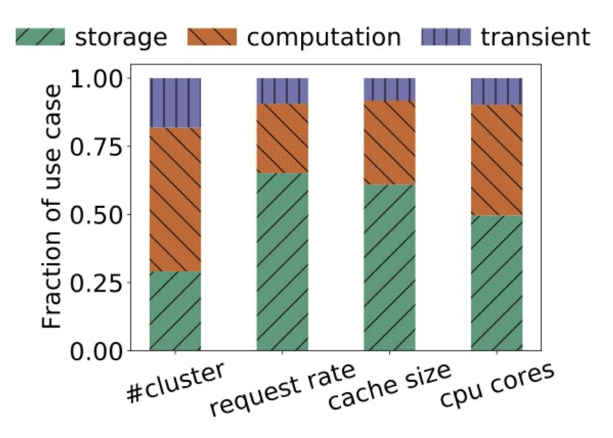

Back from FAST, this week I’m continuing my OSDI’20 series. I couldn’t update this week at my usual times as I have been crazy with meetings the whole week. Friday I only had 30 mins break the whole day while the rest is filled with meetings so I’m updating our weekly paper reading now on Saturady. I do understand why the morning paper discontinued and I actually do have the fear that this one won’t last long either… Anyways, today we will look at a less technical paper but I think would be valueable to researchers. Let’s look at the analysis of a large scale in-memory cache at Twitter.
How are in-memory caches deployed at Twitter?
- One service one cache clsuter (100s clusters in total)
- A cache cluster is composed by containers
- In total they serve billions QPS and consume 100s TB DRAM
- Method
- Week-long traces from one instance of each cluster (open sourced)
- 700 billion requests, 80 TB in size
- Focus on 54 clsuters in this paper
- Week-long traces from one instance of each cluster (open sourced)
How are cache clusters used?
- Use cases - Caching for storage (KVStore) - Caching for computation - Intermediate data no persistency
- Workloads
- 35% of clusters are write-heavy with more than 30% writes (challenges: scalability, tail latency)
- Object sizes are small
- 24% cluster mean object size < 100 bytes
- Median: 230 bytes
- Key size is large, Value/key size is small: 15% value size <= key size; 50% value size <= 5x key size (key compression)
- Sizes are changing as time goes by, and it can be very sudden with no pattern
- Metadata size is large: 56 bytes per object
How long before objects expire? Time-to-live (TTL)
- Objects are set to expire because of inconsistency, result update (refresh), etc.
- TTLs are usually short: < 20 mins, only 25% TTLs are > 2 days
- Bounded working set size (3-6GB) -> No need for huge cache size
- The paper mentions multiple TTL methods and all are inefficient
Other statistics
- Small cache miss and variations
- Request spikes are not always caused by hot keys
- Most are zipfian with large alpha with small deviations
- Cache policy is workload denpendent and FIFO performs similar to LRU
Comment
This is another no innovation but high value paper. I would definately read again carefully and come back with more notes as I found more interesting things to log. The trace may be useful for my own future papers as well.